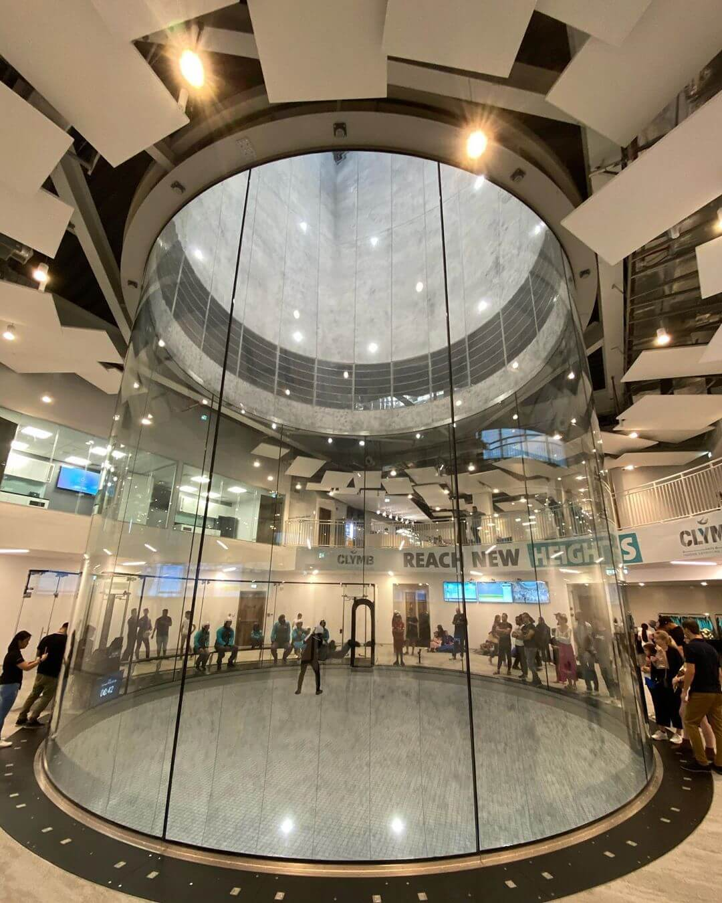

Подробная информация об аэродинамической трубе
Вы будете обеспечены всем необходимым снаряжением. Оно включает в себя комбинезон, шлем, очки и беруши.
Предоставляемые услуги:
- Организация/проведение мероприятий;
- Помещения для корпоратива;
- Конференции;
- Организация питания;
- Образовательные программы;
- Ресторан
Возрастной предел – от 3-х лет и старше.
Ограничение по весу – 115 кг максимум. Но при определенных обстоятельствах инструкторы могут разрешить превышение этого предела (например, возможен вес более 115 кг при росте более 190 см).
При беременности либо вывихе плечевого сустава в анамнезе летать нельзя.
Еще больше вопросов о полетах в аэротрубе?
Первый полет полностью занимает обычно 1-2 часа. После прибытия и регистрации перед подготовкой к полету с Вами проводится индивидуальный инструктаж, Во время полетов ваш инструктор учит вас управлять своим телом. Вы летаете по очереди вместе с другими новичками.
Подробная информация об аэротоннеле
Заявленный 19 октября 2016 года застройщик Абу-Даби Miral объявил о строительстве аэродинамической трубы диаметром 32 фута, которая официально открыла свои двери 29 ноября 2019 года.
Проект стоимостью 100 миллионов долларов на острове Яс также включает самый высокий в мире крытый скалодром. Данная локация является частью ТЦ Yas Mall и включает в себя помещения для проведения мероприятий, рестораны, магазины и многое другое.
Объект возведен компанией SkyVenture, которая предлагает строительство аэродинамических комплексов по индивидуальным проектам.
Технические характеристики аэротрубы
- Рейтинг инструкторов – IBA.
- Аэродинамический комплекс – SkyVenture.
- Тип тоннеля – рециркуляционный.
- Вид полетной камеры – круговой.
- Диаметр полетной камеры – 32 фута (9,75 м).
- Высота полетной камеры – 82 фута (25 м).